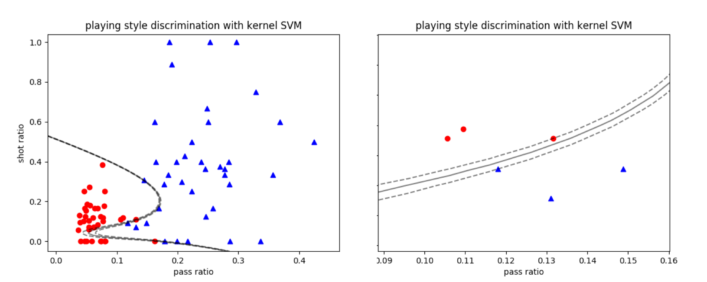

- 00 开篇词 打通修炼机器学习的任督二脉.md.html
- 01 频率视角下的机器学习.md.html
- 02 贝叶斯视角下的机器学习.md.html
- 03 学什么与怎么学.md.html
- 04 计算学习理论.md.html
- 05 模型的分类方式.md.html
- 06 模型的设计准则.md.html
- 07 模型的验证方法.md.html
- 08 模型的评估指标.md.html
- 09 实验设计.md.html
- 10 特征预处理.md.html
- 11 基础线性回归：一元与多元.md.html
- 12 正则化处理：收缩方法与边际化.md.html
- 13 线性降维：主成分的使用.md.html
- 14 非线性降维：流形学习.md.html
- 15 从回归到分类：联系函数与降维.md.html
- 16 建模非正态分布：广义线性模型.md.html
- 17 几何角度看分类：支持向量机.md.html
- 18 从全局到局部：核技巧.md.html
- 19 非参数化的局部模型：K近邻.md.html
- 20 基于距离的学习：聚类与度量学习.md.html
- 21 基函数扩展：属性的非线性化.md.html
- 22 自适应的基函数：神经网络.md.html
- 23 层次化的神经网络：深度学习.md.html
- 24 深度编解码：表示学习.md.html
- 25 基于特征的区域划分：树模型.md.html
- 26 集成化处理：Boosting与Bagging.md.html
- 27 万能模型：梯度提升与随机森林.md.html
- 28 最简单的概率图：朴素贝叶斯.md.html
- 29 有向图模型：贝叶斯网络.md.html
- 30 无向图模型：马尔可夫随机场.md.html
- 31 建模连续分布：高斯网络.md.html
- 32 从有限到无限：高斯过程.md.html
- 33 序列化建模：隐马尔可夫模型.md.html
- 34 连续序列化模型：线性动态系统.md.html
- 35 精确推断：变量消除及其拓展.md.html
- 36 确定近似推断：变分贝叶斯.md.html
- 37 随机近似推断：MCMC.md.html
- 38 完备数据下的参数学习：有向图与无向图.md.html
- 39 隐变量下的参数学习：EM方法与混合模型.md.html
- 40 结构学习：基于约束与基于评分.md.html
- 如何成为机器学习工程师？.md.html
- 总结课 机器学习的模型体系.md.html
- 总结课 贝叶斯学习的模型体系.md.html
- 结课 终有一天，你将为今天的付出骄傲.md.html
- 捐赠
18 从全局到局部：核技巧
俗话说得好：“支持向量机有三宝，间隔对偶核技巧”。在上一篇文章中我和你分享了间隔这个核心概念，今天就来看看对偶和核技巧的使用。对偶性主要应用在最优决策边界的求解中，其逻辑比较简单。
但在介绍核技巧时，会先后涉及核函数、核方法、核技巧这些近似的概念。虽然从名字上看，它们都是“核”字辈的兄弟，但是在含义和用途上却不能一概而论，因此有必要对它们做一些系统的梳理。
当支持向量机用于线性可分的数据时，不同类别的支持向量到最优决策边界的距离之和为\(2 / || {\\bf w} ||\)，其中的\({\\bf w}\)是超平面的线性系数，也就是法向量。不难看出，让间隔\(|| {\\bf w} || ^ {-1}\)最大化就是让\(|| {\\bf w} || ^ 2\)最小化，所以线性可分的支持向量机对应的最优化问题就是
\[ \\mathop {\\min }\\limits_{{\\bf w}, b} \\dfrac{1}{2} || {\\bf w} || ^ 2\]
\[ {\\rm s.t.} y_i ({\\bf w} \\cdot {\\bf x}_i + b) \\ge 1\]
其中\(y_i\)为数据点\({\\bf x}_i\)对应的类别，其取值为\(\\pm 1\)。
这个问题本身是个凸二次规划（convex quadratic programming）问题，求解起来轻松加随意。但借助拉格朗日乘子，这个原问题（primal problem）就可以改写成所谓的广义拉格朗日函数（generalized Lagrange function）
\[ L({\\bf w}, b, {\\boldsymbol \\alpha}) = \\dfrac{1}{2} || {\\bf w} || ^ 2 + \\sum\\limits_{i = 1}^m \\alpha_i\[1 - y_i ({\\bf w} \\cdot {\\bf x}_i + b)\] \]
其中每个\(\\alpha_i\)都是\(\\boldsymbol \\alpha\)的分量。和原来的优化问题相比，除了和决策边界有关的变量\({\\bf w}\)和\(b\)之外，广义拉格朗日函数还引入了一组不小于0的参数\(\\alpha_i\)。
这个式子其实从另一个角度说明了为什么最优决策边界只取决于几个支持向量。对于不是支持向量的数据点来说，等式右侧第二项中的\(1 - y_i ({\\bf w} \\cdot {\\bf x}_i + b)\)是小于0的，因此在让\(L({\\bf w}, b, {\\boldsymbol \\alpha})\)最小化时，必须把这些点的贡献去除，去除的方式就是让系数\(\\alpha_i = 0\)。这样一来，它们就成来支持向量机里的路人甲乙丙丁了。
广义拉格朗日函数的最优化可以分成两步：先把\( L({\\bf w}, b, {\\boldsymbol \\alpha})\)看成\(\\boldsymbol \\alpha\)的函数，在将\({\\bf w}\)和\(b\)视为常量的前提下求出其最大值。由于\(\\boldsymbol \\alpha\)在求最值时被消去，这时求解出的
\[\\theta _p ({\\bf w}, b) = \\mathop {\\max}\\limits_{\\boldsymbol \\alpha} L({\\bf w}, b, {\\boldsymbol \\alpha})\]
就是只和\({\\bf w}\)和\(b\)有关的函数了。
接下来如何确定最优的决策边界参数呢？这里要分两种情况来考虑。当参数\({\\bf w}\)和\(b\)不满足原问题的约束时，总会找到能让目标函数取值为正无穷的\(\\boldsymbol \\alpha\)，这意味着最大值其实就是不存在。只有符合原问题的要求时，\(\\theta _P ({\\bf w}, b)\)的最大值才有意义。
那么这个最大值等于多少呢？由于\(\\alpha_i\)和\(1 - y_i ({\\bf w} \\cdot {\\bf x}_i + b)\)的符号相反，因此两者之积必然是小于0的，由此不难得出\(\\theta _P ({\\bf w}, b) = || {\\bf w} || ^ 2 / 2\)。这里需要注意的是，在确定最优的\(\\boldsymbol \\alpha\)时，原始的优化对象\(|| {\\bf w} || ^ 2 / 2\)是作为常数项出现的。
经过一番折腾之后，原始的最小化问题就被等效为\(\\mathop {\\min }\\limits_{{\\bf w}, b} \\theta _p ({\\bf w}, b)\)，也就是广义拉格朗日函数的极小极大问题。这个极小极大问题是先对\(\\boldsymbol \\alpha\)求极大，再对\({\\bf w}\)和\(b\)求极小。如果对上一季的内容还有印象的话，你是不是会一拍大腿：一边最大，一边最小，这不就是传说中的鞍点（saddle point）嘛！
计算多重积分时，调换积分顺序是简化计算的常用技巧，这种思路在对偶问题中同样大有用武之地。“极小极大”调个个儿就变成了“极大极小”，确定参数的顺序也要相应地反转。对于支持向量机来说，其广义拉格朗日函数的极大极小问题具有如下的形式
\[ \\mathop {\\max}\\limits_{\\boldsymbol \\alpha} \\theta _D(\\boldsymbol \\alpha) = \\mathop {\\max}\\limits_{\\boldsymbol \\alpha} \\mathop {\\min }\\limits_{{\\bf w}, b} L({\\bf w}, b, {\\boldsymbol \\alpha}) \]
让广义拉格朗日函数对决策边界的两个参数\(\\bf w\)和\(b\)的偏导数为0，就可以得到
\[ {\\bf w} = \\sum\\limits_{i = 1}^m \\alpha_i y_i {\\bf x}_i, \\sum\\limits_{i = 1}^m \\alpha_i y_i = 0 \]
将解出的约束关系先代入到\(L({\\bf w}, b, {\\boldsymbol \\alpha})\)中，再作为拉格朗日乘子项引入\(L({\\bf w}, b, {\\boldsymbol \\alpha})\)的优化，就可以得到原优化问题的对偶问题（dual problem）
\[ \\mathop {\\max}\\limits_{\\boldsymbol \\alpha} \\sum\\limits_{i = 1}^m \\alpha_i - \\dfrac{1}{2} \\sum\\limits_{i = 1}^m \\sum\\limits_{j = 1}^m \\alpha_i \\alpha_j y_i y_j {\\bf x}_i^T {\\bf x}_j\]
\[ {\\rm s.t.} \\sum\\limits_{i = 1}^m \\alpha_i y_i = 0, \\alpha_i \\ge 0\]
虽然一顿操作猛如虎将原问题变成了对偶问题，但这两者之间到底能不能完全划等号还是个未知数呢。直观地看，原函数求出来的是\(L({\\bf w}, b, {\\boldsymbol \\alpha})\)最大值的下界，对偶函数求出来的是\(L({\\bf w}, b, {\\boldsymbol \\alpha})\)最小值的上界，后者肯定不会大于前者，但也不是无条件地相等。
好在在数学上可以证明，当上面的过程满足Karush-Kuhn-Tucker条件（简称KKT条件，是一组关于\(\\boldsymbol \\alpha\)、\({\\bf w}\)和\(b\)的不等式）时，原问题和对偶问题才能殊途同归。支持向量机对原问题和对偶问题之间等价关系的利用就是它的对偶性（duality）。
说完了对偶性，下面就轮到核技巧了。在核技巧这台大戏里，第一个出场的是核函数，这才是“核”字辈这些兄弟里的开山鼻祖。
要理解核函数，还是要从史上最著名的线性不可分问题——异或问题出发。假设待分类的四个点\((x_1, x_2)\)分别为\((\\pm 0, \\pm 1)\)，那么只需要添加一个多项式形式的新属性\(\\phi ({\\bf x}) = (x_1 - x_2) ^ 2\)，就可以将原来的四个点分别映射为三维空间上的(0, 0, 0), (0, 1, 1), (1, 0, 1)和(1, 1, 0)。这时，在三维空间中只需要将原来的数据平面稍微向上抬一点，就能完美地区分两个类别了。
既然\(\\phi ({\\bf x})\)能生成新的属性，它就是传说中的核函数吧？非也！\(\\phi ({\\bf x})\)只是特征映射（feature map），它的作用是从原始属性生成新的特征。对高维空间上新生成的特征向量进行内积运算，得到的才是真正的核函数（kernel function）。核函数的数学表达式具有如下的形式
\[ k({\\bf x}, {\\bf x}’) = \\phi ({\\bf x}) ^ T \\phi ({\\bf x}’) \]
核函数的这个公式给出了生成条件而非判定条件。当给定特征的映射方式后，可以用它来计算核函数；但是当给出一个确定的函数时，如何判定它能不能作为核函数呢？梅塞尔定理（Mercer’s theorem）解决了这个判定问题。
这个定理于1909年由英国数学家詹姆斯·梅塞尔（James Mercer）提出，其内容是任何满足对称性和半正定性的函数都是某个高维希尔伯特空间的内积。只要一个函数满足这两个条件，它就可以用做核函数。但梅塞尔定理只是判定核函数的充分而非必要条件，不满足梅塞尔定理的函数也可能是核函数。
之所以要将特征映射表示成核函数，是因为内积的引入简化了高维空间中的复杂运算。映射到高维空间后，待优化的对偶问题就变成了
\[ \\mathop {\\max}\\limits_{\\boldsymbol \\alpha} \\sum\\limits_{i = 1}^m \\alpha_i - \\dfrac{1}{2} \\sum\\limits_{i = 1}^m \\sum\\limits_{j = 1}^m \\alpha_i \\alpha_j y_i y_j \\phi({\\bf x}_i)^T \\phi({\\bf x}_j) \]
按照一般的思路，要直接计算上面的表达式就先得写出\(\\phi (\\cdot)\)的形式，再在新的高维特征空间上计算内积，但这在实际运算中存在很大困难。尤其是当\(\\phi (\\cdot)\)的表达式未知时，那这内积就没法计算了。可即使\(\\phi (\\cdot)\)的形式已知，如果特征空间的维数较高，甚至达到无穷维的话，内积的运算也会非常困难。
这时就需要核函数来发挥威力了。核函数说到底是瓦普尼克“能走直线就别兜圈子”思想的产物。既然优化的对象是内积的结果，那么直接定义内积的表达式就可以了，何苦还要引入特征映射和特征空间这些个中间步骤呢？更重要的是，梅塞尔定理为这种捷径提供了理论依据，只要核函数满足对称性和半正定的条件，对应的映射空间就铁定存在。
所以核函数的引入相当于隐式定义了特征映射和特征空间，无需关心这些中间结果的形式就能直接计算待优化的内积，从而大大简化计算。
从核函数出发，可以衍生出其他和“核”相关的概念。从思想上讲，核方法（kernel method）表示的是将低维空间中的线性不可分问题通常可以转化为高维空间中的线性可分问题的思路；从运算上讲，核技巧（kernel trick）表示的是通过间接定义特征映射来直接计算内积的运算方法。两者就像同一枚硬币的两面，虽然浑然一体但还是有所区别，因而有必要加以说明。
在实际应用中，有一类特殊的平稳核函数（stationary kernel），它的参数是两个原始参数之差，也就是\(k({\\bf x}, {\\bf x}’) = k({\\bf x} - {\\bf x}’)\)。平稳核函数满足平移不变性（translation invariance），只要输入\(\\bf x\)和\({\\bf x}’\)的相对位置不变，核函数的取值就不会发生变化。如果在平移不变性的基础上再定义各向同性（homogeneity），那核函数的取值就会进一步与方向无关，这样的核函数就可以表示为\(k({\\bf x}, {\\bf x}’) = k(|| {\\bf x} - {\\bf x}’ ||)\)。
一种满足平移不变性和各向同性的核函数是径向基核（radial basis function kernel），其表达式为
\[ k({\\bf x}, {\\bf x}’) = \\exp(-\\dfrac{|| {\\bf x} - {\\bf x}’ || ^ 2}{2\\sigma ^ 2}) \]
在数学上可以推导出，径向基核所对应的特征映射是无穷维的，也就是隐式的特征空间是无穷维的空间。计算无穷维的特征映射是个复杂的任务，但径向基核的出现聪明地绕开了这个障碍。应用在支持向量机中，径向基核可以将线性边界变换成非线性边界。
在Scikit-learn中设置核函数的方法并不难，只需要将SVC类中的参数kernel设置为’rbf’即可（也可以使用其他类型的核函数）。径向基核的参数\(\\sigma\)决定了高斯函数的宽度，但在SVC类中，这个参数是以\(\\gamma = 1 / 2\\sigma ^ 2\)的形式出现的，这意味着调用SVC类时\(\\gamma\)设置得越大，核的宽度实际上就越窄。
除了核宽度之外，另一个需要需要设置的是正则化参数\(C\)，这个参数越大，正则化的效果就越弱，当\(C\)接近正无穷时，计算出来的就是未经正则化处理的结果。将径向基核应用到线性不可分的数据集中，就可以将两类数据完全分开，如下图所示。在结果中，较大的\(C\)让最优决策边界有过拟合的趋势。

使用径向基核的支持向量机对曼城-西布朗数据集的分类结果
除了简化内积运算之外，核函数更本质的意义在于对相似性度量（similarity measure）的表示。回忆一下线性代数的内容，内积表示的是两个向量之间的关系。如果将两个向量归一化后再来计算内积，那么求出来的就是两者之间的夹角。而作为原始内积的非线性拓展，核函数重新定义了数据的表征框架：将每个维度上的绝对坐标替换成两两之间的相似度。
这样一来，分类问题就变成了从几何意义出发，基于相似性度量在高维的特征空间上找到线性决策边界，再将它映射成低维空间上非线性的决策边界。
在直观的认识中，两个数据点相距越近，它们归属于同一类别的可能性就越高。如果将径向基的结果看成数据点相似度的话，那么\(\\bf x\)和\({\\bf x}’\)离得越近，两者之间的相似度就越高（接近于1）；反过来离得越远，相似度就越低（接近于0）。
接下来，计算出的相似度就成为分类的依据：和哪个类别的相似度高，未知的数据点就归属于哪个类别。和线性判别分析和逻辑回归这些参数化的分类模型相比，核函数更多地借鉴了物以类聚的简单逻辑。
将这种逻辑引申一步就可以得到，核函数是实现局部化（localization）的工具。在解决回归问题时，核函数本质上也是一组权重系数，但它和线性模型中权重系数的区别在于它是取决于距离的，由距离表征的相似度决定了系数的取值。在整体上，数据空间的全局参数并不能通过最小二乘等全局性方法计算出来，而是要将每个核函数所表示的局部尺度特征叠加在一起。
这样看来，每个核函数都像是战国中雄踞一方的诸侯，其势力在远离权力中心的过程中不断减弱。和这些叱咤一方的诸侯相比，作为全局参数模型的周天子就完全是个摆设了。
今天我和你分享了支持向量机中对偶和核技巧的概念与原理，其要点如下：
支持向量机在求解最优边界时需要利用对偶性，将原问题转化为对偶问题求解；
在思想上，核方法将高维空间上的线性边界转化成低维空间上的非线性边界；
在运算上，核技巧能在低维空间中直接计算高维空间中的内积；
核函数具有局部化的特点，是从全局模型到局部模型的过渡手段。
其实在“人工智能基础课中”，高斯形式的径向基函数就有过亮相，它出现在径向基神经网络的介绍中。你可以复习一下这一部分的内容，借此加深对核函数与局部特性关系的理解。
拓展阅读
《人工神经网络 | 各人自扫门前雪：径向基函数神经网络》
说明：知识具有内在联系性，有些内容在“人工智能基础课”里有不同角度的介绍。拓展阅读是为了让你更方便地回顾内容，如已订阅可以直接点击进入文章复习。不阅读，也不影响当前的学习。
© 2019 - 2023 Liangliang Lee. Powered by gin and hexo-theme-book.